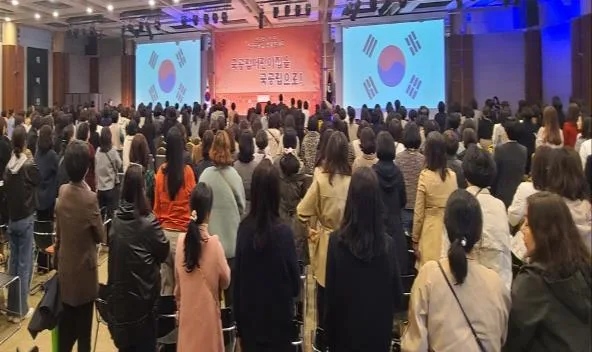

행사 준비 · 2026년 11월 10일
행사 발표자료 취합: 화면 파일 승인과 재생 확인표
행사 발표자료 취합은 받은 파일과 화면에 올릴 승인본을 구분하는 것이 핵심입니다. 발표자가 보낸 최신 파일이 현장 컴퓨터에서 열리는지, 소리와 영상까지 재생되는지는 별도 확인이 필요합니다.
장비 사양을 추정하지 않고 파일 접수부터 실제 화면 확인까지 이어지는 준비 절차를 정리합니다.

- 순서 번호·발표자·버전을 파일 이름에 일관되게 넣습니다.
- 내용 승인과 재생 확인을 서로 다른 상태로 관리합니다.
- 현장 수정본은 교체한 파일과 바뀐 부분을 함께 알립니다.

1. 행사 발표자료 취합은 접수 목록을 먼저 만듭니다
메신저, 이메일, 개인 저장장치로 파일을 받으면 어느 것이 실제 사용할 자료인지 혼동하기 쉽습니다. 주최 측이 접수 경로와 취합 담당을 정하고 모든 파일을 같은 목록에 기록합니다.
파일을 받았다는 표시와 발표자가 최종 내용에 동의했다는 표시는 다릅니다. 내용 확인 대기, 승인 완료, 재생 확인 대기처럼 상태를 나눕니다.
| 관리 항목 | 적을 내용 | 확인하는 사람 |
|---|---|---|
| 순서 번호 | 진행표와 같은 번호 | 행사 담당 |
| 발표 표시 | 화면과 소개에 쓸 이름 | 발표자 또는 소속 담당 |
| 파일 식별 | 파일 이름·버전·형식 | 취합 담당 |
| 내용 승인 | 최종 승인 여부 | 주최 측·발표자 |
| 재생 상태 | 화면·음성·영상 확인 결과 | 현장 재생 담당 |
| 대체 방법 | 재생 불가 때 사용할 자료 | 발표자·주최 측 |
받은 파일을 운영용 폴더로 옮기더라도 원본은 별도로 보존합니다. 운영 담당이 내용을 고쳐야 할 때는 임의로 수정하지 말고 발표자에게 변경 사항을 확인합니다.
2. 파일 이름과 화면 표시는 목적이 다릅니다
파일 이름은 찾기 쉬워야 하고 객석 화면에는 행사에 필요한 제목만 보여야 합니다. 내부 버전 메모나 담당자 연락처가 첫 장에 노출되지 않도록 구분합니다.
최종이라는 단어 대신 버전과 승인 상태로 구분합니다. 최종, 진짜최종 같은 이름이 쌓이면 정렬만으로 사용할 파일을 찾을 수 없습니다.
- 파일 이름 예시는 순서번호_발표명_v번호 형식으로 통일합니다.
- 수정본을 받으면 목록에 바뀐 내용과 승인 상태를 적습니다.
- 이전 파일은 실행 폴더에서 빼고 이전본 보관 위치로 옮깁니다.
- 파일명과 순서표의 발표 제목이 다르면 연결 정보를 남깁니다.

무대 양쪽 스크린에 태극기가 보이는 대회 사진입니다. 화면이 함께 보이는 장면을 참고할 수 있지만 어떤 파일 형식이나 장비를 사용했는지는 사진만으로 판단하지 않습니다.
3. 글꼴·영상·음성은 실제 재생 환경에서 확인합니다
개인 노트북에서 열리는 자료라도 현장 컴퓨터에서는 글꼴이나 연결 방식에 따라 다르게 보일 수 있습니다. 재생 담당에게 사용할 프로그램과 장비 조건을 확인하고 파일 형식을 협의합니다.
문서 안에 영상 링크만 넣었다면 네트워크가 필요한지 확인합니다. 오프라인 파일을 준비할 때도 발표자와 이용 권한을 확인하고 링크 자료를 임의로 내려받지 않습니다.
| 점검 대상 | 확인할 장면 | 문제가 있으면 |
|---|---|---|
| 글자·도표 | 줄바꿈·기호·표의 잘림 | 발표자에게 수정 또는 대체본 요청 |
| 화면 비율 | 내용이 화면 밖으로 나가는지 | 재생 담당과 표시 방식 확인 |
| 영상 | 시작·중간·종료 재생 | 원본 파일과 연결 상태 확인 |
| 소리 | 영상 음성과 발표 마이크의 구분 | 음향 담당과 재생 경로 확인 |
| 넘김 방식 | 직접 조작 또는 신호 전달 | 발표자와 조작 담당 합의 |
| 대체본 | 정적 자료로 전달 가능한 내용 | 발표자 승인 뒤 별도 준비 |
정적 문서로 바꾸면 애니메이션이나 영상은 그대로 동작하지 않을 수 있습니다. 대체본은 원본과 같다고 가정하지 말고 어떤 설명을 말로 보충할지 발표자와 맞춥니다.
파일 열림과 전체 재생 확인을 같은 뜻으로 기록하지 않습니다. 첫 화면만 본 경우에는 확인 범위를 적어 두고 필요한 장면을 다시 점검합니다.
4. 공개 화면에서 보이지 말아야 할 것을 정리합니다
발표 화면 공유를 시작하면 바탕화면, 알림, 다른 문서가 함께 나타날 수 있습니다. 현장 담당과 발표 화면의 범위를 확인하고 관련 없는 프로그램과 알림을 정리합니다.
비공개 업무자료나 참가자 개인정보가 들어 있는 슬라이드는 주최 측과 발표자가 공개 가능 여부를 판단해야 합니다. 재생 담당이 내용 승인을 대신하지 않도록 역할을 나눕니다.

사진에는 MC와 무대 뒤 스크린이 함께 보입니다. 객석에 공개되는 화면과 운영자가 보는 자료를 구분해야 한다는 점을 설명하는 참고 장면입니다.
- 발표자 메모가 객석 화면으로 나가지 않는지 확인합니다.
- 계정 로그인이나 인증 정보가 화면에 노출되지 않도록 합니다.
- 연락처가 담긴 운영표를 발표 파일과 분리합니다.
- 공개 허가가 불분명한 이미지·영상은 발표자에게 확인합니다.
자료를 주고받을 때 공개 링크를 쓸 필요가 있는지부터 검토합니다. 운영에 참여하지 않는 사람이 열람할 수 있는 공유 설정은 피하고 행사 후 접근 정리 담당도 정합니다.
5. 현장 교체는 바뀐 부분까지 확인한 뒤 반영합니다
발표 직전에 수정본이 들어오면 최신이라는 이유만으로 바로 실행 파일을 덮어쓰지 않습니다. 바뀐 장면, 내용 승인 여부, 재생 점검에 필요한 범위를 확인합니다.
교체 파일을 승인하면 이전 실행본도 함께 제외합니다. 파일을 새로 받았지만 운영석은 옛 파일을 열고 있는 상황이 생기지 않도록 목록을 갱신합니다.
- 수정 요청을 취합 담당에게 모으고 변경한 슬라이드나 영상을 확인합니다.
- 발표자와 주최 측의 내용 승인을 확인합니다.
- 재생 담당이 변경 부분과 연결된 장면을 점검합니다.
- 운영 목록과 순서표에 적용 버전을 알리고 발표자에게 반영 결과를 전달합니다.
점검할 여유가 없다면 주최 측과 발표자가 기존 승인본 사용 또는 순서 조정 등 가능한 방식을 결정합니다. 확인하지 않은 파일을 확인 완료로 표시해 다음 담당에게 넘기지 않습니다.
6. 요청 범위와 종료 뒤 파일 정리를 같이 정합니다
힐링엔터테인먼트 하는 일에는 전문 MC 진행, 무대 진행 · 현장 운영, 음향 · 무대 · 조명 · DJ가 안내되어 있습니다. 발표자료 제작이나 모든 파일 형식의 재생을 보장하는 뜻은 아닙니다.
견적 문의에는 발표 순서, 화면 사용 여부, 영상·음성 포함 여부와 조작 방식을 알려 주세요. 자동 견적서에서 필요한 항목을 확인하더라도 실제 장비 연결과 재생 담당은 따로 협의합니다.
행사 종료 뒤에는 주최 측에 넘길 최종 자료와 임시 복사본을 구분합니다. 보관 목적과 필요한 기간은 주최 측이 정하고 운영용 기기와 공유 폴더의 정리 여부를 확인합니다.
파일을 삭제할 때도 승인 없이 원본을 지우지 않습니다. 취합 담당이 전달 완료를 확인한 뒤 임시본을 정리하도록 인계표에 책임과 처리 상태를 남깁니다.
자주 묻는 질문
발표 파일을 PDF로만 받으면 되나요?
내용에 따라 다릅니다. 정적 자료의 대체본으로 활용할 수 있지만 영상·애니메이션·넘김 방식은 달라질 수 있어 발표자와 재생 담당이 확인해야 합니다.
파일이 열리면 재생 확인 완료인가요?
아닙니다. 글자와 도표, 영상·음성, 화면 표시와 넘김 방식까지 필요한 장면을 확인합니다.
일부만 봤다면 확인 범위를 기록합니다.
발표 직전 수정 파일을 받으면 바로 바꾸나요?
내용 승인과 재생 점검을 거친 뒤 교체합니다. 시간이 부족하면 주최 측과 발표자가 기존 승인본 사용 등 가능한 대응을 결정합니다.
행사 날짜가 정해지셨나요?
날짜 · 지역 · 인원 · 행사 종류만 알려 주시면 행사에 맞춰 상담 · 견적을 안내드립니다. 행사 중엔 통화가 어려우니 문자 · 카톡을 남겨 주세요.